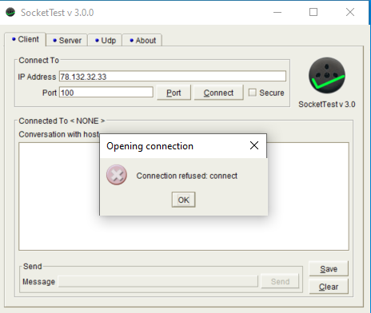
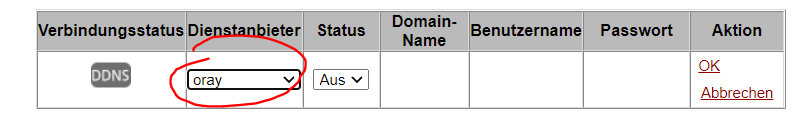

Hallo !
ich lebe in Wien, habe ein Magenta Wireless Modem (Speedbox) und möchte, dass mein PC unter der Adresse 192.168.8.102 nach außen über TCP Port 1000 erreichbar ist. Dazu habe ich eine Zeile in der Port Fowarding Konfiguration der Speedbox eingetragen.
Meine Firewall am PC hab ich kurzfristig deaktiviert, um zu testen.
Diese test-App
https://www.yougetsignal.com/tools/open-ports/
sagt mir, dass meine public IP folgendermaßen ist: 213.142.96.22
In der Geräteinformation des Modems sehe ich aber:
WAN-IP-Adresse: 100.84.185.218
Wie passt das zusammen und wieso diese Abweichung?
Jedenfalls bin ich, nachdem ich einen TCP Server auf Port 1000 gestartet habe von außen weder über die eine, noch die andere Adresse erreichbar: der Port 1000 ist angeblich nicht offen.
Was kann das sein?
ja, mit SIM Karte im Modem
Bearbeitet von wacenovsky
Hey
@wacenovsky
Bei mobilen Internetanschlüssen wird bei IPv4 standardmäßig eine geteilte IP-Adresse nach außen verwendet.
Dies ist unter anderem der Fall, weil es nur recht wenige IPv4 Adressen gibt.
Bei Magenta brauchst du nur den APN oder Zugangspunkt am Router ändern, damit dieser eine öffentliche dynamische IPv4 Adresse zugewiesen bekommt.
Es gibt zu ein paar Geräten Anleitungen, wie du vorgehen musst, um die Einstellung zu ändern. Wähle dafür auf der Hardware Support Seite deinen Router aus und folge dann der Anleitung "APN / NAT-Typ ändern". Sollte dein Router nicht vorhanden sein, schreib bitte welches Modell du genau hast.
LG NTM
Bearbeitet von NTMIch habe dieses Gerät:
https://www.telekom.de/hilfe/geraete-zubehoer/router/weitere-router/telekom-speedbox?samChecked=true
den Würfel in schwarz. Da steckt eine SIM Karte drin.
Heißt das jetzt, dass ich noch keine public IP zugewiesen bekommen habe? Was muss ich nun tun?
https://www.magenta.at/hilfe-service/services/hardwaresupport/device/internet-flex/box-b529s
Möglicherweise ist es auch dieses,
es sieht gleich aus ;-)
Ja das ist das gleiche Modell.
Einfach nur dieser Anleitung folgen:
Bearbeitet von NTM
ich hab das jetzt gemacht. tatsächlich habe ich jetzt eine andere IP Adresse: 78.132.32.33
Und es funktioniert einmal über diese Seite (rechts im Bild).
Warum kann ich es aber nicht zwecks Test von meinem PC (im lokalen 192er Netz) anstoßen, wenn ich einen TCP Client lokal starte und auf 78.132.32.33:100 connecte? Kann das prinzipiell nicht gehen? Siehe zweites Bild.
Jedenfalls bin ich einen großen Schritt weiter - DANKE!!!

Wirseshark sagt dann das: RST/ACK
geht das evtl gar nicht? lese gerade, dass das ur mit Hairpinning gehen kann.
Ist aber egal - war ja nur ein Test...
Bearbeitet von wacenovskyVon innen geht es mit der öffentlichen IP-Adresse nur, wenn der Router NAT Loopback unterstützt. Viele der eher einfach gehaltenen Provider Geräte können dies nicht.
Leider stelle ich gerade fest, dass die Speedbox dynDNS (DDNS) zwar unterstützt, aber nur dynDNS.org, NO-IP.com und oray unterstützt. Alle drei sind nicht gratis. Gibt es eine möglichkeit, eine andere Box zu erwerben, die hier flexibler ist?

Huawei Mobilfunk Router haben leider diese Einschränkung bezüglich DynDNS.
Derzeit hat Magenta den Alcatel HH71 und den ZTE MF289D im Sortiment. Wobei ich denke, dass der HH71 eher kein DynDNS kann und beim MF289D weiß ich leider auch nicht, ob es überhaupt unterstützt wird und wenn ja welche Anbieter.
Du kannst natürlich auch jeden anderen Router, welcher für Europa gedacht ist (mit 4G/LTE Bändern 7, 1, 3, 8, 20) und entsperrt ist mit deiner Sim-Karte verwenden.
z.B. Fritz!Box 6820v2, Fritz!Box 6890 LTE, Fritz!Box 6850 5G, Netgear Orbi LBR20, TP-Link MR600, Asus 4G-AC53U, Asus 4G-AC86U, ...
Diese kommen alle mit einem DynDNS Service, welcher vom Hersteller bereitgestellt wird, und sie haben ähnliche oder bessere Modems verbaut, damit sich die Performances im Vergleich zum B529 nicht verschlechtert.
Es würde aber auch mit einem Raspberry Pi und dynu möglich sein.
Wie funktioniert die Lösung mit einem Pi ?
Der erkennt Änderungen der IP Adresse und sendet einen update Befehl an den dynDNS provider?
Wo kann man das nachlesen?
Der Raspberry PI pollt einen externen Dienst welcher dem PI die IP liefert, wenn der da eine Änderung erkennt, wird die neue IP an den dyndns Dienst geliefert.
Hier gibt es eine Anleitung wie man dies z.B. desec.io lösen könnte:
https://desec.readthedocs.io/en/latest/dyndns/configure.html -> Option 2, ddclient
{kind=link}
{kind=link}